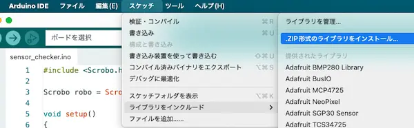

実験Ⅰ テーマ3 開発環境設定とサンプルプログラムの解説
電気電子工学実験Ⅰ テーマ3の開発環境を自分のPCで整える方法と，サンプルプログラムについて解説する．
Arduino IDEのインストール
別記事を参照してArduino IDEをインストールする．
Scroboライブラリのインストール
モータ制御用のライブラリをインストールする．
- GitHubページからソースコードのzipファイルをダウンロードする．
- Arduino IDEのメニューから，「スケッチ＞ライブラリをインクルード＞.ZIP形式のライブラリをインストール」を選び，ダウンロードしたzipファイルを選択する．

USBシリアル変換ICのドライバー
実験機に搭載されているマイコンをPCで認識するために，USBシリアル通信用IC（CH340）のドライバーをインストールする必要がある． 現行のOSであれば，インターネットに接続した状態でPCとマイコンをUSBケーブルでつなぎ，しばらく待てば自動的にインストールが行われる．
手動でインストールしたい場合は，たとえば秋月電子のページなどでインストール方法が紹介されている．
サンプルプログラムの解説
実験機のサンプルプログラムには，センサ機能を確認するsensor_checkerと，駆動機能を確認するmotor_checkerが含まれる．これらについて解説する．
共通部
モータ制御用ライブラリをインクルードし，インスタンス（robo）を作る． これはScroboライブラリで用意されている関数を使う場合に必要となる．
7行目で通信速度38400 baudでPCとマイコン間のシリアル通信を開始する．
sensor_checker
1秒ごとに6個のアナログセンサの出力値を読み取り，シリアル通信に書き込むプログラムである．
void loop()
{
// Read analog inputs
int ball_left = analogRead(0); // A0
int ball_center = analogRead(1); // A1
int ball_right = analogRead(2); // A2
int range = analogRead(3); // A3
int floor_left = analogRead(6); // A6
int floor_right = analogRead(7); // A7
// Serial outputs
Serial.print(ball_left);
Serial.print(",");
Serial.print(ball_center);
Serial.print(",");
Serial.print(ball_right);
Serial.print(",");
Serial.print(range);
Serial.print(",");
Serial.print(floor_left);
Serial.print(",");
Serial.print(floor_right);
Serial.println();
// Wait 1 sec
delay(1000);
}4–9行目は，各行でひとつずつアナログセンサの値を読み取り，整数型の変数に格納している． analogRead関数の引数は，センサが接続されているマイコンボードのポート番号である． センサは0–5 Vの電圧値を出力し，それをマイコンのA/D変換ボードが0–1023の整数値に変換する．
12–23行目は，変数に保存したデータをシリアル通信でPC宛に送信している． ダブルクォートで囲われた(“,”)は，区切り用のカンマを書くため． printlnは末尾に改行を付加するプリント文で，23行目は改行のみを送信している．
最後に，26行目にて1000ミリ秒 = 1秒待機する． 1秒経過後にloop関数の内容をすべて実行し終えたことになり，センサ出力を読み取る冒頭部に戻る．
motor_checker
左右の走行モータ（左: M1, 右: M2）とドリブルモータ（M3）の動作テストを行うプログラムである．
void loop() {
delay(2000);
// Move forward
robo.setSpeedM1(100);
robo.setSpeedM2(100);
delay(1500);
// Stop
robo.setSpeedM1(0);
robo.setSpeedM2(0);
delay(1000);
// Move backward
robo.setSpeedM1(-100);
robo.setSpeedM2(-100);
delay(1500);
// Stop
robo.setSpeedM1(0);
robo.setSpeedM2(0);
delay(1000);
// Zigzag
for (int i = 0; i < 4; i++) {
robo.setSpeedM1(100);
robo.setSpeedM2(30);
delay(500);
robo.setSpeedM1(30);
robo.setSpeedM2(100);
delay(500);
}
robo.setSpeedM1(0);
robo.setSpeedM2(0);
delay(1000);
// Turn left
robo.setSpeedM1(-100);
robo.setSpeedM2(100);
delay(1500);
// Stop
robo.setSpeedM1(0);
robo.setSpeedM2(0);
delay(1000);
// Turn right
robo.setSpeedM1(100);
robo.setSpeedM2(-100);
delay(1500);
// Stop
robo.setSpeedM1(0);
robo.setSpeedM2(0);
delay(1000);
// Dribbling
robo.setSpeedM3(100); // forward
delay(2000);
robo.setSpeedM3(0); // stop
delay(1000);
robo.setSpeedM3(-100); // reverse
delay(2000);
robo.setSpeedM3(0); // stop
delay(1000);
// Stop and wait
robo.setSpeedM3(0);
while (1) {}
}冒頭のdelay(2000)によって，電源ONから2秒後にモータが動き出す．
5行目のrobo.setSpeedM1(100)は，左モータ(M1)のデューティ比を100に設定する． デューティ比は，PWM制御においてHighの電圧を加える割合であり，雑に言えば，モータの回転速度を決めるパラメータである1． このプログラムでは\(-255--255\)の値を指定できる（が定格電圧の関係で最大100としている）． 0で停止，正で前進方向，負で後退方向に回転する．
robo.は，setup関数の前に作成したScroboクラスのインスタンスで，setSpeedM1関数を使うために必要である． 6行目のsetSpeedM2は同じく右モータ（M2）のデューティ比を設定する．
7行目でこの状態を1.5秒維持する． この，delayを書かないと何が起こるか？ 5行目から6行目へ移るタイムラグはマイコンの実行速度によるが，体感としてはほぼゼロである． 同じように10行目まで，ほぼタイムラグなしで実行される． つまり，モータのデューティ比を100に設定した次の瞬間，10, 11行目でデューティ比を0に設定し直すことになり，モータは回転しない．
26行目以降のように，左右のモータで速度差をつけると，ロボットを旋回させることができる． 58行目のドリブルモータ（M3）の回転速度・方向指定も走行モータと同様である．
最後に，69行目は無限ループであり，ひととおりモータテストが終わったら，loop関数の内容を繰り返すこと無くロボットを停止させる動作を実現している．
Footnotes
電気電子工学科の諸兄は理屈からしっかり学んでほしい．↩︎